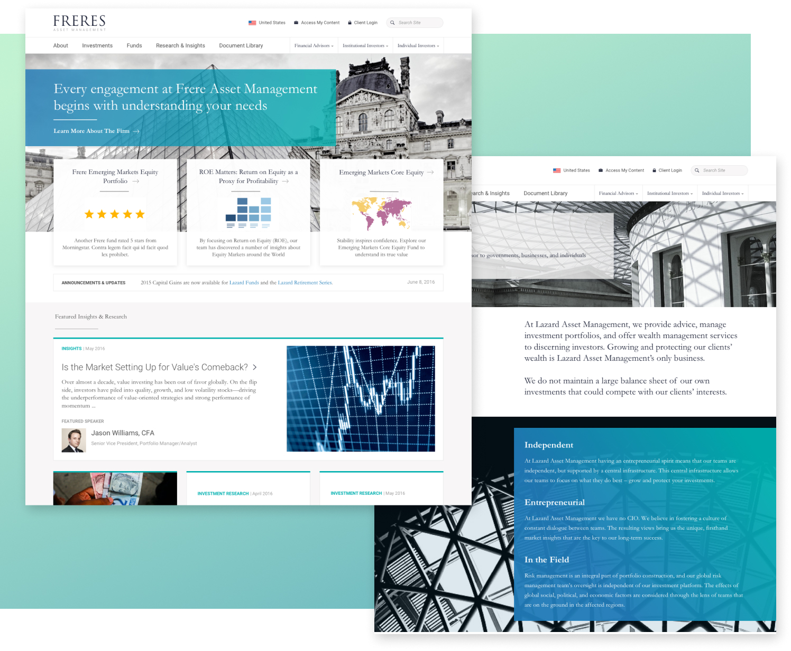

Hi, my name is Aaron.
I am currently Lead Product Designer at The Black Tux.
I previously worked at Paperless Post and Tigerspike.
Recent Writing
From Design Systems to Design Ecologies
Growing organizations must accept growing complexity. When one "design system" is not enough, sometimes collections of systems are used, in what could be called a design ecology.
A Middleman Template for Responsive Prototyping
I created a basic starter kit to help designers build small responsive web projects or prototypes. Read below for why and how I put it together.
An Agency Designer Comes to Terms with Being a Product Designer
A Product Designer reflects on his experience after being humbled
An Agency Designer’s Dreams of being a Product Designer
How one little Agency Designer's dreams of being a big time Product Designer
Colleague Avatars
I don't think you can call yourself a designer if you don't draw cute little avatars at some point. Right?
A New Website for a New Year
As of January 2016 this site is purposefully bare. I’ve started my own new website for the first time since 2012 and I wanted to start over
Design Systems in the Real World
Everyone knows we should be designing systems, but are there other considerations before committing to this approach?
Recent Projects

The Paperless Post Customization Tool
A redesign doesn't have to mean a year long slash and burn. After conducting brief but targeted user research I focused on a few key areas to improve while aligning a complex workflow into new branding.

Global Financial Services Firm
The client needed a look and feel that connected to its corporate parent, while allowing for some independence. The real fun began as we unearthed the specific legal and marketing requirements from each global branch.
Responsive Intranet Redesign
A long term project to research and design a unified intranet service for a global investment firm
DTV Concept Design
A major media company hired us to create a concept for their new cross-platform digital streaming product
Clinical Pharmacology
One of the biggest names in Medical Data and Publishing came to us to help take their products into the mobile era